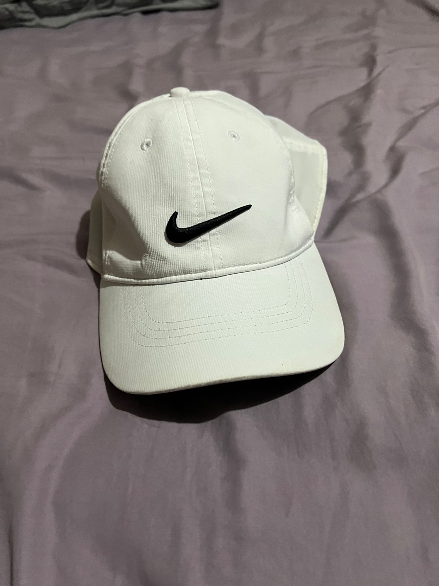

Gorra Nike
Las gorras Nike son el complemento perfecto para cualquier atuendo deportivo o casual.
Cada gorra está diseñada con un enfoque en la calidad, la comodidad y el estilo12.
Las gorras Nike vienen en una variedad de estilos y colores, desde gorras estructuradas
hasta gorras sin estructura12. Una característica destacada de las gorras Nike es la
tecnología Dri-FIT12. Las gorras Dri-FIT están diseñadas para mantener la cabeza seca y
cómoda, incluso durante los entrenamientos más intensos12.Además, las gorras Nike están
hechas con materiales de alta calidad, lo que garantiza un ajuste cómodo y durabilidad3.
Con correas ajustables, aseguran un ajuste personalizado para todos los tamaños de cabeza3.
Así que, si estás buscando una gorra que sea versátil, duradera y siempre a la moda, no
busques más allá de las gorras Nike. Ya sea que estés yendo al gimnasio, a una caminata o
simplemente buscando el complemento perfecto para tu atuendo casual, una gorra Nike es la
elección perfecta para ti. ¡Hazte con tu gorra Nike hoy mismo
Gorra Adidas para hombre
Pon el toque que tu atuendo necesita con esta gorra béisbol adidas. Diseñada para los días
calurosos, su tejido suave te protege de los rayos del sol. Luce un logo adidas Badge of Sport
como protagonista en el frente. Tejido plano, 100% poliéster, Tacto suave y ligero, Gorra
clásica ajustable, Protección UV 50 contra los rayos dañinos del sol, Banda acolchada para
absorber el sudor, Corona y vis

Gorra Nike para hombre deportiva
Combina el estilo clásico de la nueva gorra Nike Club con cualquier conjunto. Este diseño clásico
de seis paneles está confeccionado con un suave tejido de sarga sin estructura y cuenta con una
visera precurvada para ofrecer un estilo sencillo. La corona de perfil medio cuenta con un
logotipo Swoosh con contorno para ofrecer un acabado impecable. La correa posterior y el cierre
con deslizamiento triple perm

Gorra Red Bull F1
La gorra trucker Red Bull Racing New Era Seasonal E-Frame es una expresión de estilo y pasión por el automovilismo.
Diseñada en colaboración con New Era, esta gorra captura la esencia dinámica y deportiva del equipo Red Bull Racing.
Confeccionada con materiales de alta calidad, esta gorra combina una parte delantera estructurada con una malla trasera
transpirable, ofreciendo comodidad y ventilación durante todo el día. El diseño presenta el icónico logo de Red Bull
Racing bordado en la parte delantera, junto con detalles adicionales que reflejan la estética moderna y dinámica del
equipo.
Ya sea para animar en las carreras o para lucir un estilo urbano y casual, la gorra Red Bull Racing New Era Seasonal
E-Frame es una elección perfecta para los aficionados al automovilismo que buscan mostrar su apoyo con estilo.o